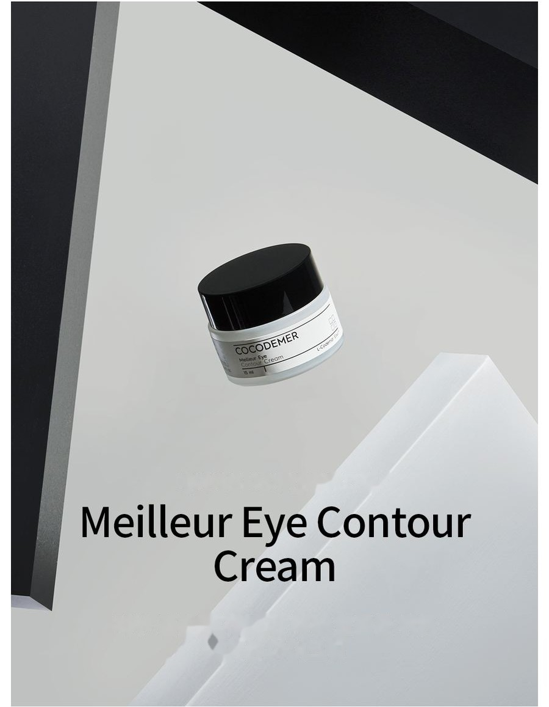
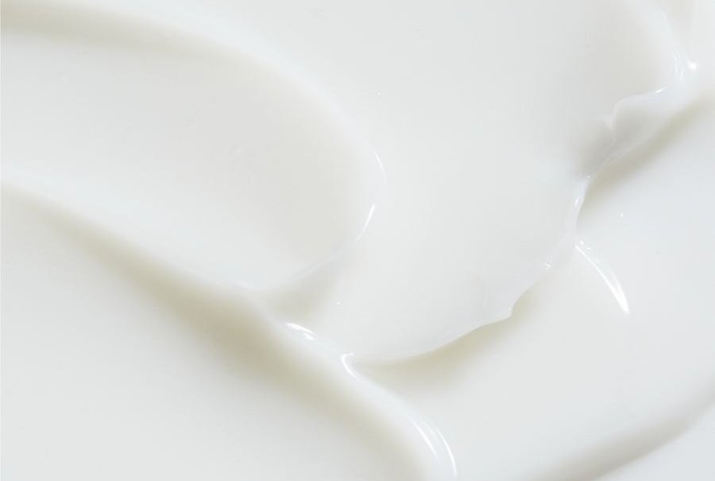
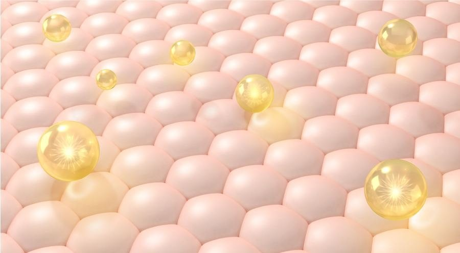

COCODEMER Meilleur Eye Contour Cream
| Объём | 15ml |
|---|---|
| Подходит для | Все типы кожи |
| Ключевая технология | L-CODEMAR ELIXIR™ |
| Изготовитель · Ответственный дистрибьютор | JUNGCOS CO., LTD. / COCODEMER CO., LTD. |
Этот продукт был разработан в рамках нашего направления индивидуальной косметики. В настоящее время не продаётся. По вопросам повторного производства или обновления, пожалуйста, свяжитесь с нами через запрос B2B.

Дышащий крем для кожи вокруг глаз, который скрывает несовершенства, позволяя коже дышать
Насыщенный питательный крем для кожи вокруг глаз с плотным прилеганием — для более упругой на вид кожи
Образует сплошную увлажняющую вуаль для ухода за кожей вокруг глаз, не упускающего ни одного участка, и помогает сохранить её свежей и полной жизни на вид.
Высококонцентрированные питательные компоненты проникают в каждую мелкую морщинку и образуют плотно прилегающий защитный слой на нежной коже вокруг глаз, делая её более упругой и напитанной.
Мягкая текстура обволакивает кожу и тает на ней, а лёгкая формула позволяет коже дышать, поэтому средство можно использовать на всём лице.

2% гибридной пудры с эффектом софт-фокус дарят коже гладкое, пудровое ощущение. Технология бархатной матрицы обеспечивает естественное покрытие, плотное прилегание и доставляет концентрированное питание глубоко в кожу, делая кожу вокруг глаз эластичной и упругой.
Коллаген и ботокс-коллаген возвращают уверенность в плотной и упругой коже, а комплекс фитоувлажняющих компонентов запечатывает на её поверхности увлажняющую вуаль —
увлажнение, которое не иссякает.
* Приведённое выше относится только к конкретному ингредиенту.
Код ключевого активного компонента
- MoУвлажнениеУвлажняющий компонент
- AwПротив морщинАнтивозрастной уход
- WhОтбеливаниеОтбеливание
- TbСмягчение кожных проблемСмягчение кожных проблем
- BsОсноваСмягчение кожи
Смягчающие масла и растительные увлажняющие компоненты создают прочную увлажняющую вуаль, делая кожу вокруг глаз увлажнённой и упругой.

Ботокс- и коллагеновые пептиды способствуют коррекции морщин. Оба компонента хорошо совместимы с кожей и эффективно разглаживают кожу вокруг глаз без раздражения.
Замедляя перемещение меланина, смягчает пигментацию и осветляет тон кожи, помогая уменьшить тёмные пятна.
* Приведённое выше описание относится к ингредиентам, а не к готовому продукту.
Подробнее об ингредиенте →
L-CODEMAR ELIXIR™
Собственная технология COCODEMER.
Наша непревзойдённая технология многослойной инкапсуляции в наногелевой эмульсии объединяет ключевые активные компоненты — кокосовую воду, фитостеролы, 20 аминокислот и экстракт мёда — в стабильный комплекс. Затем этот комплекс встраивается в дружественную коже липосомальную форму, повторяющую структуру самой кожи, что максимально повышает эффективность доставки в кожу.
L-Codemar Elixir™ укрепляет связи между клетками кожи. Он восстанавливает повреждённый барьер и образует прочную защитную плёнку, благодаря чему увлажнение сохраняется дольше.

Текст на изображении выше
L-CODEMAR ELIXIR™
- КОКОСОВАЯ ВОДА
- ЭКСТРАКТ МЁДА
- 20 ВИДОВ АМИНОКИСЛОТ
- ФИТОСТЕРИН

Текст на изображении выше
- Микробы, мелкодисперсная пыль, жёлтая пыль, загрязняющие вещества и загрязнение воздуха
- Избыточная потеря воды
Повреждённая кожа
Повреждённые межклеточные липиды ослабляют связи между клетками эпидермиса
- Добавленные межклеточные липиды ↑
- Активные компоненты
- Защищает от внешнего стресса и загрязняющих веществ
- Меньшая потеря воды
Здоровая кожа
Восполненные липиды восстанавливают межклеточный матрикс → более прочные связи между клетками
Способ применения
1. Возьмите необходимое количество средства встроенной лопаточкой.
2. Безымянным пальцем мягко распределите крем по контуру глаз, затем похлопывайте до полного впитывания.
Можно также использовать на всём лице
Насыщенный питательный крем для кожи вокруг глаз с плотным прилеганием — для более упругой на вид кожи
Образует сплошную увлажняющую вуаль для ухода за кожей вокруг глаз, не упускающего ни одного участка, и помогает сохранить её свежей и полной жизни на вид.
Высококонцентрированные питательные компоненты проникают в каждую мелкую морщинку и образуют плотно прилегающий защитный слой на нежной коже вокруг глаз, делая её более упругой и напитанной.
Мягкая текстура обволакивает кожу и тает на ней, а лёгкая формула позволяет коже дышать, поэтому средство можно использовать на всём лице.
2% гибридной пудры с эффектом софт-фокус дарят коже гладкое, пудровое ощущение. Технология бархатной матрицы обеспечивает естественное покрытие, плотное прилегание и доставляет концентрированное питание глубоко в кожу, делая кожу вокруг глаз эластичной и упругой.
Коллаген и ботокс-коллаген возвращают уверенность в плотной и упругой коже, а комплекс фитоувлажняющих компонентов запечатывает на её поверхности увлажняющую вуаль — увлажнение, которое не иссякает.
Смягчающие масла и растительные увлажняющие компоненты создают прочную увлажняющую вуаль, делая кожу вокруг глаз увлажнённой и упругой.
Ботокс- и коллагеновые пептиды способствуют коррекции морщин. Оба компонента хорошо совместимы с кожей и эффективно разглаживают кожу вокруг глаз без раздражения.
Замедляя перемещение меланина, смягчает пигментацию и осветляет тон кожи, помогая уменьшить тёмные пятна.
* Приведённое выше описание относится к ингредиентам, а не к готовому продукту.
L-CODEMAR ELIXIR™
Собственная технология COCODEMER. Наша непревзойдённая технология многослойной инкапсуляции в наногелевой эмульсии объединяет ключевые активные компоненты — кокосовую воду, фитостеролы, 20 аминокислот и экстракт мёда — в стабильный комплекс. Затем этот комплекс встраивается в дружественную коже липосомальную форму, повторяющую структуру самой кожи, что максимально повышает эффективность доставки в кожу. L-Codemar Elixir™ укрепляет связи между клетками кожи. Он восстанавливает повреждённый барьер и образует прочную защитную плёнку, благодаря чему увлажнение сохраняется дольше.
1. Возьмите нужное количество средства встроенной лопаточкой. 2. Безымянным пальцем мягко распределите крем по контуру глаз, затем похлопывайте до полного впитывания. *Можно также использовать на всём лице
| Объём или масса нетто | 15ml |
|---|---|
| Подходит для | Все типы кожи |
| Срок годности / срок использования после вскрытия | 30 месяцев с даты изготовления; использовать в течение 12 месяцев после вскрытия |
| Способ применения | Возьмите нужное количество средства прилагаемой лопаточкой. Безымянным пальцем мягко распределите крем по контуру глаз, затем слегка похлопайте для впитывания. |
| Изготовитель косметической продукции | JUNGCOS CO., LTD. |
| Ответственный дистрибьютор | COCODEMER CO., LTD. |
| Страна происхождения | Республика Корея |
| Полный состав (INCI) | Cocos Nucifera (Coconut) Water, Cyclopentasiloxane, Glycerin, Dicaprylyl Carbonate, Hydrogenated Poly(C6-14 Olefin), Water, Methylpropanediol, Dimethicone, Betaine, Niacinamide, Raffinose, Vinyl Dimethicone/Methicone Silsesquioxane Crosspolymer, Butylene Glycol, Caprylyl Methicone, Cetyl PEG/PPG-10/1 Dimethicone, PEG-10 Dimethicone, Centella Asiatica Extract, Ficus Carica (Fig) Fruit Extract, 1,2-Hexanediol, Magnesium Sulfate, Panthenol, Honey Extract, Carthamus Tinctorius (Safflower) Seed Oil, Hydrogenated Lecithin, Oenothera Biennis (Evening Primrose) Oil, Sodium Hyaluronate, Acetyl Hexapeptide-8, Adenosine, Alanine, Allantoin, Arginine, Aspartic Acid, Bioflavonoids, Carbomer, Carnitine, Carnosine, Ceramide NP, Cetearyl Alcohol, Cetyl Ethylhexanoate, Citrulline, Creatine, Ethylhexylglycerin, Glucosyl Hesperidin, Glutamic Acid, Glutamine, Glycine, Hydrogenated Phosphatidylcholine, Hydroxyacetophenone, Inositol, Isoleucine, Leucine, Methionine, Myristic Acid, Neopentyl Glycol, Diheptanoate, Ornithine, Palmitic Acid, Palmitoyl Pentapeptide-4, PEG-12 Dimethicone/PPG-20 Crosspolymer, PEG-9 Polydimethylsiloxyethyl Dimethicone, Phenylalanine, Phytosterols, Polyglyceryl-10 Myristate, Polyglyceryl-2 Stearate, Polyglyceryl-6 Polyricinoleate, Polyquaternium-51, Polysorbate 20, Proline, Propanediol, Quaternium-90 Bentonite, Serine, Squalane, Stearic Acid, Threonine, Tranexamic Acid, Trehalose, Tryptophan, Tyrosine, Valine, Fragrance (Parfum) |
| Одобрение функциональной косметики | Помогает осветлить кожу. Способствует коррекции морщин. |
| Меры предосторожности | 1. При появлении на месте нанесения красных пятен, отёка, зуда или других нежелательных реакций во время или после применения, а также под воздействием прямых солнечных лучей обратитесь к специалисту. 2. Избегайте нанесения на повреждённую или травмированную кожу. 3. Хранение и обращение: a) Хранить в недоступном для детей месте. b) Хранить вдали от прямых солнечных лучей. |
| Гарантия качества | В случае обнаружения дефекта компенсация предоставляется в соответствии со Стандартами урегулирования потребительских споров, утверждёнными Комиссией по справедливой торговле Республики Корея. |
| Обращения покупателей | 010-3307-9341 / cocodemer@cocodemer.co.kr |
* Обязательная информация в соответствии с корейскими правилами маркировки и рекламы косметической продукции. Это справочный перевод; для получения заверенной декларации состава, CPSR или CoA, пожалуйста, свяжитесь с нами через запрос B2B.